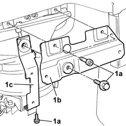
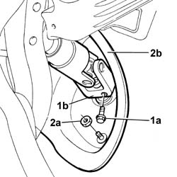
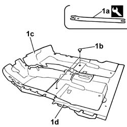

7040L17 Passenger compartment front floor carpet - R.R.
- Path
- Procedures > 70 FITTINGS > 7040 BODY INTERIOR UPHOLSTERY AND TRIM > 7040L PASSGNER COMPARTMENT FLOOR COVERING > 7040L17 Passenger compartment front floor carpet - R.R.
- Kind
- repair procedure (removal / refitting; the operation number is the code)
- Applies to
- all engines; all production periods
- Interactive page
- https://sloeber94.github.io/elrnDB-lThss/en/#/126626
Applies to: all engines; all production periods
 Removing
Removing
 Refitting
Refitting- Disconnect the negative battery terminal.
See in Op. 5040D19 CONTROL UNIT with CONTROL PANEL for rear air conditioning - R.R.
-
See in Op. 7040L70 Tunnel cover REAR COVER - R.R.
See in Op. 5010C32 Air VENT in tunnel cover for rear seats
See in Op. 7040A65 passenger compartment box lock , one , r r
See in Op. 7045A10 FRONT SEAT (one) left or right - R.R.
See in Op. 7040L37 GEAR LEVER SURROUNDING TRIM - R.R.
See in Op. 7040L72 GLASS HOLDER on tunnel cover - R.R.
See in Op. 7040L28 TRIM for switch holder on tunnel cover - R.R.
See in Op. 7040L20 TUNNEL COVER - R.R.
See in Op. 7040A60 UNDER FACIA TRIM - R.R.
See in Op. 7040A58 TRIM on dashboard - R.R.
See in Op. 7040A44 INSTRUMENT PANEL LEFT SIDE TRIM - R.R.
See in Op. 7040A45 INSTRUMENT PANEL RIGHT SIDE TRIM - R.R.
See in Op. 5010C56 LEFT air OUTLET in dashboard - R.R.
-
See in Op. 5010C62 Air VENT UNIT and SIDE air DIFFUSER in dashboard - R.R.:
-
See in Op. 5010C02 RIGHT SIDE air VENT in dashboard (passenger side) - R.R.
-
See in Op. 5010C58 Right air OUTLET in dashboard - R.R.
-
See in Op. 7040G20 GLOVE COMPARTMENT BULB HOLDER IN DASHBOARD
See in Op. 7040A31 Compartment in dashboard - R.R.
See in Op. 7040A14 Glove compartment FLAP in dashboard - R.R.
See in Op. 7040G24 Glove compartment light SWITCH - R.R.
-
See in Op. 5580C26 passenger air bag deactivating switch - r r
See in Op. 5580C22 AIR BAG MODULE (passenger side) - R.R.
See in Op. 4110A10 STEERING WHEEL - R.R. for replacement or checks
-
See in Op. 5580C12 CLOCK SPRING for AIR BAG system - R.R.
See in Op. 5050A10 Windscreen washer fluid RESERVOIR (in engine compartment) R.R.
-
See in Op. 7040A23 Instrument panel SURROUND in dashboard
See in Op. 5560B11 ANALOGUE CONTROL PANEL - R.R. or Replace
-
- [5580P26]
See in Op. 5580P20 CONNECT CONTROL UNIT - R.R.
-
See in Op. 7040A20 LEFT dashboard LOWER TRIM - R.R.
See in Op. 5040D60 ACTUATOR for one diffused air vent flap, left or right - R.R.
-
See in Op. 5010C30 central air outlet on fascia - r+r
See in Op. 5040D18 Air conditioning CONTROL UNIT - R.R.
-
See in Op. 5010D56 SOLAR SENSOR - R.R. after checking electrical system
See in Op. 7040A68 GRILLE for centre dashboard speaker - R.R.
See in Op. 5570T52 Centre SPEAKER in dashboard - R.R.
-
See in Op. 7040A10 Instrument facia TRIM - R.R.
See in Op. 7025A34 bonnet lid lock (one) - r+r or repair
See in Op. 7040A37 Fuse access cover in instrument panel - R.R.
See in Op. 7025A24 Bonnet release LEVER - R.R.
See in Op. 7040L39 RUNNING BOARD FOR LEFT FRONT DOOR HOUSING - R.R.
See in Op. 7040L41 RUNNING BOARD FOR RIGHT FRONT DOOR HOUSING - R.R.
See in Op. 7040H36 CENTRE PILLAR TRIM LOWER ELEMENT (one), left or right - R.R.
See in Op. 1068A20
1. Undo the fixing bolts (1a) and remove the upper bracket (1b) and the lower bracket (1c) on the fan assembly.

Applies to: all engines; all production periods
1. Undo the fixing bolt (1a) and disconnect the steering column (1b) from the steering box.
2. Undo the fixing nuts (2a) and remove the boot (2b).

Applies to: all engines; all production periods
1. Release the retaining plugs (1b) between the front carpet (1c) and the rear carpet (1d) using the tool (1a).
 | Description | Code | Function |
|---|---|---|---|
1a | Knife | 1.878.077.000 | Removing front carpet |

Applies to: all engines; all production periods
- Remove the front carpet, driver's side and passenger side.
Applies to: all engines; all production periods
Refitting
Removing- Check that the front carpet is not damaged.
- Fit the front carpet in the housing, driver's side and passenger side, and secure it to the rear carpet using the retaining plugs.
- Place the boot in position and secure it using the fixing nuts.
- Connect the steering column to the steering box and tighten the fixing bolt to torque.
 | Value - daNm | Fastening | Component | Ø |
|---|---|---|---|---|
. | 2 | Bolt | STEERING SHAFT MOUNTING | M8 |
- Fit the upper and lower brackets on the fan assembly and tighten the fixing bolts.
See in Op. 1068A20
See in Op. 7040H36 CENTRE PILLAR TRIM LOWER ELEMENT (one), left or right - R.R.
See in Op. 7040L41 RUNNING BOARD FOR RIGHT FRONT DOOR HOUSING - R.R.
See in Op. 7040L39 RUNNING BOARD FOR LEFT FRONT DOOR HOUSING - R.R.
See in Op. 7025A24 Bonnet release LEVER - R.R.
See in Op. 7040A37 Fuse access cover in instrument panel - R.R.
See in Op. 7025A34 bonnet lid lock (one) - r+r or repair
See in Op. 7040A10 Instrument facia TRIM - R.R.
See in Op. 5570T52 Centre SPEAKER in dashboard - R.R.
-
See in Op. 7040A68 GRILLE for centre dashboard speaker - R.R.
See in Op. 5010D56 SOLAR SENSOR - R.R. after checking electrical system
See in Op. 5040D18 Air conditioning CONTROL UNIT - R.R.
-
See in Op. 5010C30 central air outlet on fascia - r+r
See in Op. 5040D60 ACTUATOR for one diffused air vent flap, left or right - R.R.
-
See in Op. 7040A20 LEFT dashboard LOWER TRIM - R.R.
See in Op. 5580P20 CONNECT CONTROL UNIT - R.R.
-
- [5580P26]
See in Op. 5540A20 Exterior lights SWITCH PANEL and instrument panel light dimmer - R.R.
-
See in Op. 5560B11 ANALOGUE CONTROL PANEL - R.R. or Replace
See in Op. 7040A23 Instrument panel SURROUND in dashboard
See in Op. 5550A10 stalk unit assembly - r+r
-
See in Op. 5580C12 CLOCK SPRING for AIR BAG system - R.R.
See in Op. 4110A10 STEERING WHEEL - R.R. for replacement or checks
-
See in Op. 5580C22 AIR BAG MODULE (passenger side) - R.R.
See in Op. 5580C26 passenger air bag deactivating switch - r r
See in Op. 7040G24 Glove compartment light SWITCH - R.R.
-
See in Op. 7040A14 Glove compartment FLAP in dashboard - R.R.
See in Op. 7040A31 Compartment in dashboard - R.R.
See in Op. 7040G20 GLOVE COMPARTMENT BULB HOLDER IN DASHBOARD
See in Op. 5010C58 Right air OUTLET in dashboard - R.R.
-
See in Op. 5010C02 RIGHT SIDE air VENT in dashboard (passenger side) - R.R.
-
See in Op. 5010C62 Air VENT UNIT and SIDE air DIFFUSER in dashboard - R.R.:
-
See in Op. 5010C56 LEFT air OUTLET in dashboard - R.R.
-
See in Op. 7040A45 INSTRUMENT PANEL RIGHT SIDE TRIM - R.R.
See in Op. 7040A44 INSTRUMENT PANEL LEFT SIDE TRIM - R.R.
See in Op. 7040A58 TRIM on dashboard - R.R.
See in Op. 7040A60 UNDER FACIA TRIM - R.R.
See in Op. 7040L20 TUNNEL COVER - R.R.
See in Op. 7040L28 TRIM for switch holder on tunnel cover - R.R.
See in Op. 7040L72 GLASS HOLDER on tunnel cover - R.R.
See in Op. 7040L37 GEAR LEVER SURROUNDING TRIM - R.R.
See in Op. 7045A10 FRONT SEAT (one) left or right - R.R.
See in Op. 7040A65 passenger compartment box lock , one , r r
See in Op. 5010C32 Air VENT in tunnel cover for rear seats
See in Op. 7040L70 Tunnel cover REAR COVER - R.R.
See in Op. 5040D19 CONTROL UNIT with CONTROL PANEL for rear air conditioning - R.R.
-
- Connect the negative battery terminal.
Topics linked from this page (47)
- 4110A10 STEERING WHEEL - R.R. for replacement or checks
- 5010C02 RIGHT SIDE air VENT in dashboard (passenger side) - R.R.
- 5010C30 central air outlet on fascia - r+r
- 5010C32 Air VENT in tunnel cover for rear seats
- 5010C56 LEFT air OUTLET in dashboard - R.R.
- 5010C58 Right air OUTLET in dashboard - R.R.
- 5010C62 Air VENT UNIT and SIDE air DIFFUSER in dashboard - R.R.:
- 5010D56 SOLAR SENSOR - R.R. after checking electrical system
- 5040A20 Air conditioning COMPRESSOR - R.R. - Includes fluid level check and top up if necessary
- 5040D18 Air conditioning CONTROL UNIT - R.R.
- 5040D19 CONTROL UNIT with CONTROL PANEL for rear air conditioning - R.R.
- 5040D60 ACTUATOR for one diffused air vent flap, left or right - R.R.
- 5050A10 Windscreen washer fluid RESERVOIR (in engine compartment) R.R.
- 5540A20 Exterior lights SWITCH PANEL and instrument panel light dimmer - R.R.
- 5550A10 stalk unit assembly - r+r
- 5560B11 ANALOGUE CONTROL PANEL - R.R. or Replace
- 5570T52 Centre SPEAKER in dashboard - R.R.
- 5580C12 CLOCK SPRING for AIR BAG system - R.R.
- 5580C22 AIR BAG MODULE (passenger side) - R.R.
- 5580C26 passenger air bag deactivating switch - r r
- 5580P20 CONNECT CONTROL UNIT - R.R.
- 7025A24 Bonnet release LEVER - R.R.
- 7025A34 bonnet lid lock (one) - r+r or repair
- 7040A10 Instrument facia TRIM - R.R.
- 7040A14 Glove compartment FLAP in dashboard - R.R.
- 7040A20 LEFT dashboard LOWER TRIM - R.R.
- 7040A23 Instrument panel SURROUND in dashboard
- 7040A31 Compartment in dashboard - R.R.
- 7040A37 Fuse access cover in instrument panel - R.R.
- 7040A44 INSTRUMENT PANEL LEFT SIDE TRIM - R.R.
- 7040A45 INSTRUMENT PANEL RIGHT SIDE TRIM - R.R.
- 7040A58 TRIM on dashboard - R.R.
- 7040A60 UNDER FACIA TRIM - R.R.
- 7040A65 passenger compartment box lock , one , r r
- 7040A68 GRILLE for centre dashboard speaker - R.R.
- 7040A95 Left or right reinforcement crossmember (one), dashboard and bodyshell supporting crossmember - R.R.
- 7040G20 GLOVE COMPARTMENT BULB HOLDER IN DASHBOARD
- 7040G24 Glove compartment light SWITCH - R.R.
- 7040H36 CENTRE PILLAR TRIM LOWER ELEMENT (one), left or right - R.R.
- 7040L20 TUNNEL COVER - R.R.
- 7040L28 TRIM for switch holder on tunnel cover - R.R.
- 7040L37 GEAR LEVER SURROUNDING TRIM - R.R.
- 7040L39 RUNNING BOARD FOR LEFT FRONT DOOR HOUSING - R.R.
- 7040L41 RUNNING BOARD FOR RIGHT FRONT DOOR HOUSING - R.R.
- 7040L70 Tunnel cover REAR COVER - R.R.
- 7040L72 GLASS HOLDER on tunnel cover - R.R.
- 7045A10 FRONT SEAT (one) left or right - R.R.